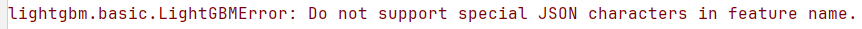

数据加载
- 知识点：Pandas 的 read_csv 函数会自动将文件中的字符串 NA 识别为 NaN
为了避免上述情况发生，可以设置该函数的参数：在1
2
3import pandas as pd
data = pd.read_csv('filename.csv', keep_default_na=False, na_values=['', ])na_values中，还可以加入其他需要被识别为 NaN 的情形
数据预处理
- 知识点：在使用 sklearn 的 LabelEncoder 时，当测试集中存在训练集未包含的值时，会报错，例如：解决方案可以参考：https://blog.csdn.net/qq_38463737/article/details/119236133
1
ValueError: y contains previously unseen labels: 'Q9NPI1'
模型
知识点：LogisticRegression 结果无法复现的原因可能是底层的 C 实现使用了随机数生成器
解决：使用更小的tol，例如 1e-8知识点：当输入数据是 Pandas 的 DataFrame 形式，且其列名中包含字符逗号（’,’）时，lightgbm 会报错：

解决：1
2new_cols_name = [col.replace(',' , '') for col in X.columns]
X.columns = new_cols_name